Chrome side panel¶
The heim side panel puts your local model — and its tools — next to every page
you browse. It is a thin Chrome MV3 client for a running heim serve: heim owns the
model, the agent loop, and the MCP tools; the panel just renders the chat and streams
the answer. It is the same chat UI the web app ships (one SPA, wrapped as a side
panel), so Markdown, code highlighting, and tool-call chips all behave identically.
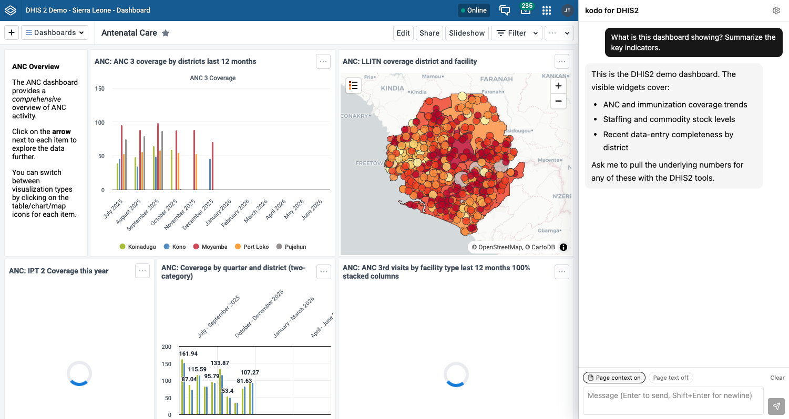
It works with any heim backend:
- a generic
heim serve(pick-a-model free-play, or a locked single model), or - a project assistant — a
heim.tomlwith an[assistant]block, such as thedhis2template — which adds the target banner, session probes, and the "Use my login" bind flow shown below.
For copy-paste prompts that are verified to work well with a ~12B local model, see the Chrome side-panel prompt catalog.
Install¶
The panel is built from the repo, then loaded unpacked (it is not on the Chrome Web Store yet).
Two builds, one codebase. The same source ships in two flavors: the generic heim panel and heim for DHIS2 (a DHIS2-branded name, description, and icon, plus DHIS2-oriented connection copy). Every feature is in both — only the wording differs. Build whichever you want (or both):
make extension # generic -> extension/.output/chrome-mv3
cd extension && bun run build:dhis2 # DHIS2 -> extension/.output/chrome-mv3-dhis2
Then load it — pick .output/chrome-mv3 for the generic panel or
.output/chrome-mv3-dhis2 to sit next to your DHIS2 work:
- Start a heim server on a pinned port, e.g.
heim serve --ui --port 8000. - Open
chrome://extensions, enable Developer mode. - Load unpacked -> select
extension/.output/chrome-mv3(orextension/.output/chrome-mv3-dhis2). - Click the heim toolbar icon to open the side panel.
For the full DHIS2 experience (target banner, Verify, Use my login), serve a project scaffolded from the dhis2 template instead of a bare model:
heim project new --template dhis2 myassistant && cd myassistant
mkdir -p .dhis2 && cp examples/dhis2-profiles.toml .dhis2/profiles.toml # demo credentials
heim serve --port 8000
Allow the extension (cors_origins)¶
Read-only traffic (status, tools, chat streaming) works immediately. Mutating requests
— loading a model — are blocked by heim's cross-site guard until you allow this
extension's origin. An unpacked extension's id is derived per machine, so it differs on
every checkout; the panel's Settings shows your exact id with a copy button, and
the connection gate detects the 403 symptom and hints the fix. Add the line to your
heim config and restart heim serve:
When heim is not reachable, the panel says so plainly and retries every 3s — no manual reconnect needed once the server comes up.
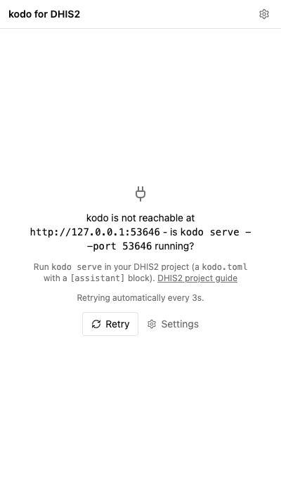
Backends¶
The panel can hold several backends at once — a local generic heim, a project assistant, a remote instance — each with its own base URL, token, and conversation history. When more than one is configured, a switcher appears next to the "heim" title in the header; picking one swaps the whole panel (transcript, target banner, tools) to that backend.
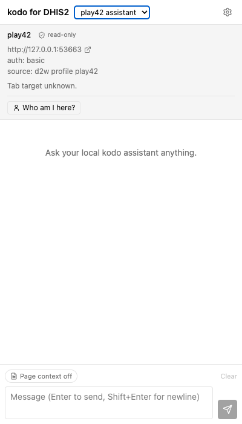
The switcher is a native dropdown
The switcher is a standard <select>; its open list is drawn by the OS, so the
screenshot shows the control (here set to the play42 assistant backend) rather
than the expanded popup. Both backends are visible in the Settings editor below.
Add, name, and test backends in Settings (the gear icon). Each entry has a base
URL, an optional token, and a Test connection button that pings /api/status.
Loopback hosts (127.0.0.1 / localhost) may use http; a remote host requires
https (an extension page cannot make plain-http requests to a remote origin — a
mixed-content block), and remote heim also wants a bearer token (heim auto-generates
auth_token when it binds a non-loopback interface).
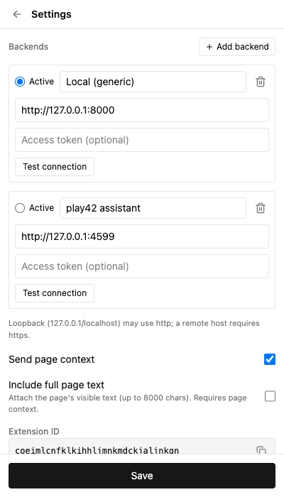
Chat¶
Type and send; the reply streams token by token. Along the way:
- Tool chips — each tool call and result renders as a compact chip. A structured
(JSON) result collapses to a one-line digest of its top-level keys; click it to
expand the pretty-printed payload (the exFAT bridge's
{exit_code, stdout}envelope is inlined so you read the real data, not an escaped string). - Reasoning — a model's thinking stream folds into a collapsible "Reasoning" block above the answer.
- Stop turns the send button into a stop button mid-stream; aborting leaves the partial answer and no error. Clear empties the current backend's transcript.
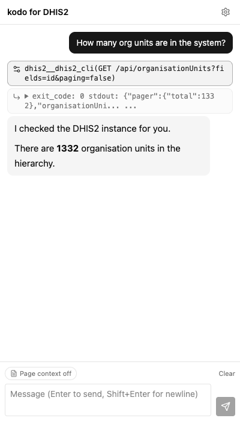
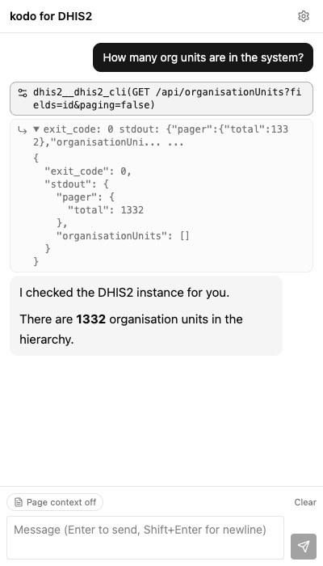
Page context¶
Two pills in the composer (mirrored as checkboxes in Settings) control what gets attached to your next message:
- Page context attaches a labeled block with the page URL, title, and your current text selection.
- Page text (a sub-option) also attaches the page's visible text, collapsed and truncated to 8000 characters — for whole-page tasks. For selection-grounded tasks (Q&A, rewrite, translate), select the paragraph first and leave Page text off so only your selection is sent.
For a project assistant with a session probe, the context block also carries two explicitly labeled identities so the model never conflates them — the Browser session user (who is viewing the page, from the probe) and the Tool account (the credentials the tools run as, from the assistant metadata).
See the prompt catalog for prompts verified against these toggles.
Any page (generic)¶
None of this is DHIS2-specific. The generic build (.output/chrome-mv3, branding just
"heim") is the same panel with no target banner, no Verify, and no bind — it sits next to
any page and answers about it through page context. Ask it to summarize an article, pull
the gist of a feed, or explain a selection, and it grounds the answer in the current tab.
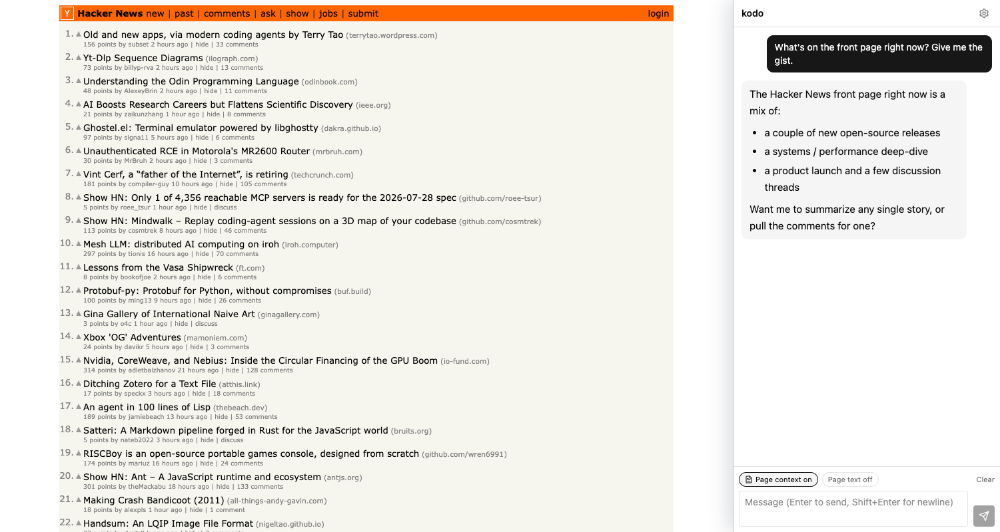
Assistant targets¶
A project with an [assistant] block (e.g. the dhis2 template) advertises itself
through GET /api/assistant, and the panel renders a target banner above the chat:
the assistant name, a read-only badge, its base URL, auth, and source.
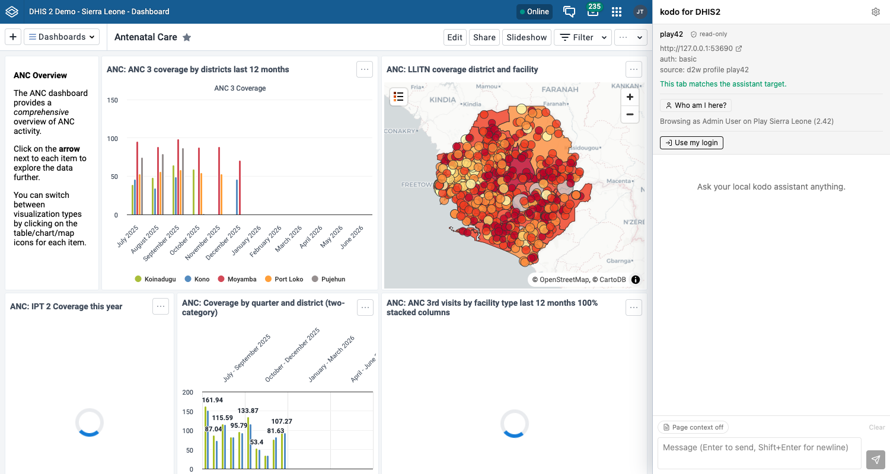
- Tab match — the banner tells you whether your active tab is on the assistant's target site ("This tab matches the assistant target.") or not, so you know the page context and session reads line up with what the tools act on.
- Verify — when the assistant declares a verify recipe, this runs it (a generic MCP tool call named in the metadata) and reports the live result.
- Who am I here? — when the assistant declares a probe recipe, this reads the signed-in user on the target tab (same-origin fetches in the tab's own context) and shows, e.g., "Browsing as Admin User on Play Sierra Leone (2.42)".
A generic backend advertises none of this — no banner, no Verify, no probe — and chat works exactly the same.
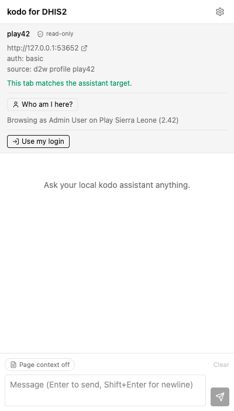
Use my login¶
By default a project assistant's tools authenticate as whatever credential the project was scaffolded with. Use my login lets the tools act as you on the target instance instead — without ever copying a password into heim.
The button appears once your active tab matches the target. Clicking it shows a consent card: what will be created, its scope, and its lifetime.
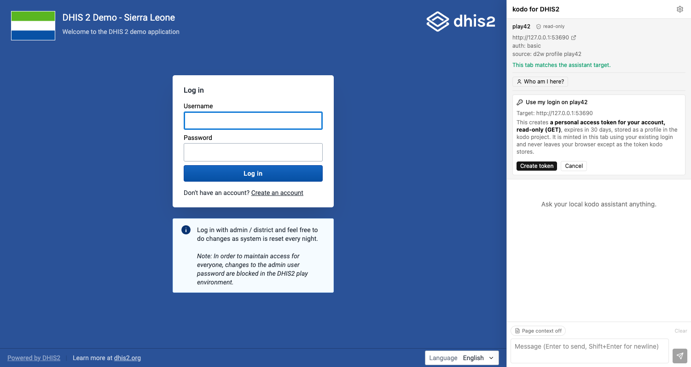
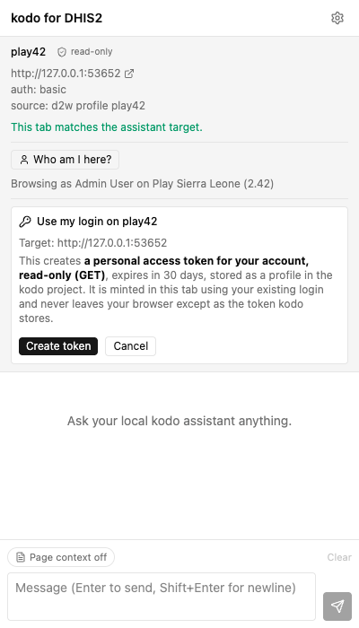
The happy path mints a personal access token entirely in the tab's own context (using your existing login) and hands heim only the secret:
- Log in to the instance in a normal tab.
- Click Use my login, then Create token on the consent card.
- The panel mints a scoped PAT — GET-only for a read-only assistant — with a 30-day expiry, stores it in the heim project's profile, and shows an Acting as \<you> (your login) chip.
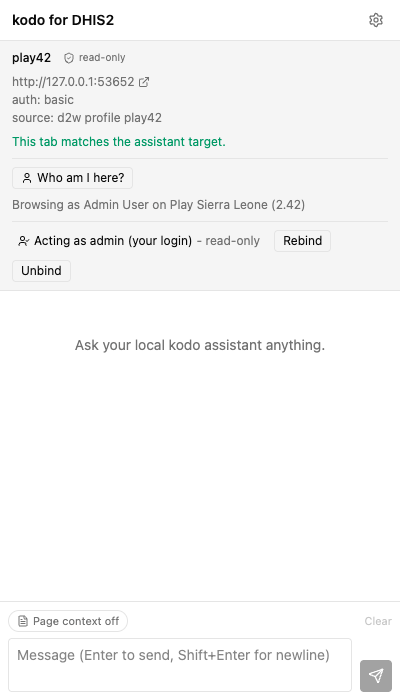
Read-only by default. For a read-only assistant the token is minted GET-only. A write-enabled assistant can instead mint a read-write token behind an explicit "Allow writes" consent — and every write is then gated by a per-action confirmation. See Writes, gated below.
Session-cookie fallback. Some instances won't mint a PAT (older versions, or the
endpoint disabled). The panel then offers to share your live session cookie instead
— this asks for the cookies permission on the target origin and reads its session
cookie. The trade-offs are real: it dies when you log out of the instance, and it
grants the extension cookie access to that origin. The PAT path is preferred; the
fallback is opt-in.
Expiry, rebind, unbind.
- The chip flags an expired binding (the PAT lapsed, the session cookie was evicted, or the tab is now signed in as a different user) and offers Rebind.
- Unbind removes the bound profile and best-effort revokes the PAT on the instance. A PAT is also revocable any time from your DHIS2 user settings.
- Unbinding does not restore the assistant's original demo profile. If you want the
scaffolded credential back, re-copy it (e.g.
cpthe template profile back into the project) or rerun the project's profile setup.
Writes, gated¶
A write-enabled assistant (its [assistant] block declares it is not read-only) can
act on the instance, not just read it. Writes are never silent: they are gated in two
places — an up-front consent when you bind, and a per-action confirmation on every single
write.
-
Bind with writes. When the assistant is write-enabled, the "Use my login" consent card grows an Allow writes toggle. Leave it off for a GET-only token (the default); turn it on to mint a read-write PAT (the full
GET/POST/PUT/PATCH/DELETEmethod set). The session-cookie fallback is inherently full-authority, so it carries the same toggle — there the per-action confirmation is the guardrail, not the token scope.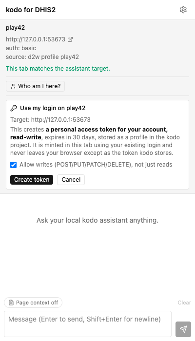
-
Confirm every write. When the model calls a write tool, heim holds the call and the panel shows an inline Approve / Deny card naming the exact tool and arguments (e.g.
dhis2__dhis2_cli(POST /api/dataValues ...)). Nothing runs until you decide.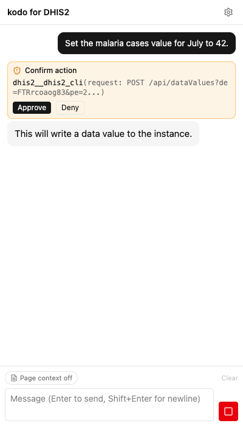
-
Deny is safe. Denying returns
error: user declined this actionto the model as the tool result; the model reads it and continues (it does not retry blindly). The stream is never aborted — approving simply resumes it with the tool's real result. -
Fail-safe on timeout. If a confirmation is left unanswered it auto-denies after
HEIM_CONFIRM_TIMEOUT(300s by default) — the card shows Auto-denied (timed out) and the model continues as if you had denied it.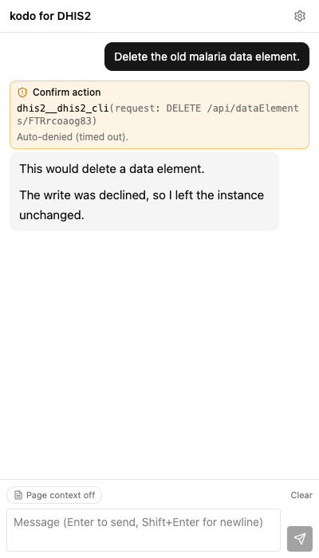
The non-interactive one-shot (heim chat -p) has no card to click, so it fail-safe-denies
every write unless you pass --allow-writes — an explicit opt-in for scripted runs.
Troubleshooting¶
| Symptom | Cause & fix |
|---|---|
| 403 on load / "cross-site guard" | The extension origin isn't allowed. Add cors_origins = ["chrome-extension://<your-id>"] (the gate and Settings show the exact line) and restart heim serve. |
| 401 / token prompt | The server requires auth. Paste the auth_token into Settings (Access token); the panel prompts for it automatically. |
| Every call 404s | A trailing slash in the base URL (.../) — the panel normalizes it on save, so re-save the backend. |
| "No model is loaded" / stuck loading | A locked project has a model but it isn't running: click Load \<model>. A cold start can take a while (a 409/loading state is expected); it flips to ready on the next status poll. |
| Binding suddenly "expired" | The target instance rotated or reset (e.g. the DHIS2 play demo resets nightly), invalidating the PAT/session. Just Rebind. |
| Remote heim won't connect | A non-loopback base URL must be https (mixed-content block). Serve heim behind TLS or tunnel to 127.0.0.1. |
Regenerating the screenshots
The panel-detail images (NN-*.png, 01-11) are generated headlessly against mock
backends (no real heim serve, ephemeral ports, a pinned light-theme viewport) using
the DHIS2-flavored build. 09-11 cover the write flow: the "Allow writes" bind
consent, the mid-chat Approve/Deny confirmation card (pending), and the same card
auto-denied on timeout. The hero composites (hero-*.png) join two real
screenshots side by side; hero-1-hero-3 pair the live play42 UI with the panel
(its target banner and Who-am-I run against the real logged-in play42 tab, a mock heim
backend with the real probe recipe — if play42 is unreachable the page half falls back
to a mock target). hero-4-generic pairs the generic build's panel with the
Hacker News front page (a local stand-in if Hacker News is unreachable).
The script is extension/e2e/screenshots.ts; it writes docs/img/extension/NN-*.png
and docs/img/extension/hero-*.png.